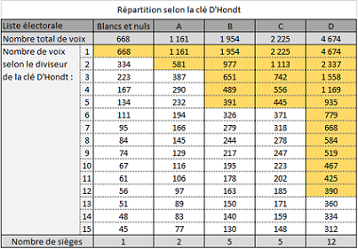
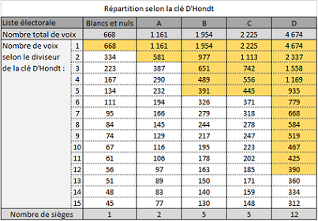

Offrir une représentation aux votes blancs au niveau communal.
Cette idée est
partagée par une partie du monde académique dont Min Reuchamps ou encore par Julie Delvoye dans son travail de fin d'études :
Les votes blancs et nuls : une opportunité pour la réintroduction du tirage au sort en politique.
Je vous propose également la lecture d'un travail de fin de formation en vue de l'obtention d'un
Certificat Inter-Universités en Démocratie Participative intitulé :
Une représentation pour tous !
Comment procéder :
1. Distinguer le vote blanc du vote nul.
Sur le bulletin de vote, ajouter une case supplémentaire "Vote blanc" afin de prendre connaissance de l'ampleur de ce choix électoral et de le formaliser. Faire de celui-ci un vote à part entière et de permettre la traduction réelle de la volonté de l’électeur au sein des assemblées.
2. Tenir compte des votes blancs et nuls dans l’annonce des résultats.
Améliorer la lecture des résultats en indiquant clairement la proportion de chaque vote et abstention.
exemple 1 :

exemple 2 :
3. Attribuer les sièges du vote blanc.
Comment ?
- En amont de l'élection, sur base volontaire ou sur appel, permettre la constitution d’une réserve de candidats voulant
représenter le « Vote blanc ».
- Les critères de recevabilité d’une candidature sont ceux inscrits dans la Constitution.
- Lors du dépouillement, distinguer les votes blancs des votes nuls et considérer les votes blancs comme des votes valables
entrant en considération pour l'attribution des sièges.
- Appliquer un tirage au sort parmi les candidats de cette réserve afin d'attribuer les sièges obtenus par les votes blancs.
La critique la plus fréquente qui est faite à cette proposition est le fait que seul se trouverait dans cette liste, le nom des
personnes qui sont intéressés à faire de la politique. D'où l'idée de tirer au sort parmi l'ensemble des personnes ayant participés
aux élections et non seulement ceux qui présentent leur candidature afin de représenter le vote blanc.
Réflexion personnelle
Ok, j'entends bien l'idée. Cependant :
- Actuellement, quels sont les noms qui se retrouvent sur les listes électorales ? Est-ce ceux de personnes désintéressées ?
Non. Je ne le pense pas. Pourquoi faudrait-il, dans ce cas, prendre une précaution particulière pour les futurs représentants des
votes blancs ?
- Lors du tirage au sort, pourquoi faudrait-il considérer ceux qui ont déjà obtenu une représentation politique par le biais de leur
vote ? N'est-ce pas là leur donner une seconde chance d'être représentés, alors que d'autres ne sont pas représentés du tout ?
Une autre critique est une crainte de surreprésentation d'une certaine catégorie de personnes (hommes, 40-50 ans, universitaires).
Mais cette surreprésentation est déjà présente dans le système de gouvernement représentatif actuel, sans pour autant que cela
ne fasse un tollé. Le but de la proposition n'est pas de corriger un quelconque défaut de représentativité de l'électorat, mais de
permettre la représentation de tout un chacun.
Concernant la surreprésentation, il en existe une deuxième au coeur du système puisqu'en ne tenant pas compte des votes non-valables,
cela gonfle les chiffres électoraux des listes et cela ne semble gêner personne jusqu'à présent.
Je le répète, le but de cette proposition n'est pas de corriger un quelconque défaut de représentativité de nos assemblées, mais
d'offrir d'abord une représentation à tout un chacun.
4. Effet de la proposition.
 

Dans les tableaux ci-dessus, nous pouvons constater que dans les deux cas, la diversité des convictions s’est enrichie par
l'obtention d'un siège aux votes blancs et nuls, et fait disparaître la discrimination générée par le système à l’encontre des
votes blancs. Mais ajoutons qu'en plus d'attribuer le nombre de siège obtenu aux votes blancs, nous obtenons une représentation
encore plus proche du choix de l'électorat, en minimisant la surreprésentation de la liste D.
Le tableau ci-dessous nous montre l'impact de la représentation des votes blancs et nuls sur les majorités communales.

En 2012, 196 Communes avaient la particularité d'être en majorité absolue de sièges avec une seule liste. Pour l’ensemble des
communes, sur un total de 5322 sièges, 78 auraient été attribués aux votes blancs et nuls. De la sorte, 59 communes auraient été
impactées par l’attribution de sièges aux votes blancs et nuls, soit 22,52% des 262 communes. Les absentéistes auraient remporté 400
sièges distribués dans 174 Communes.
Après distribution de sièges aux votes blancs, nuls et bulletins non-déposés, 22 communes auraient perdu leur majorité absolue soit
8,40% des communes. Par contre si l’on tient compte de l’ensemble des bulletins non-valables (blancs et nuls) et de l’absentéisme
électoral de manière agrégée, 742 sièges leur auraient été distribués, 230 communes auraient été impactées et 48 auraient perdu leur
majorité absolue.
En 2018, 189 communes étaient en majorité absolue avec une seule liste. Sur un total de 5370 sièges, 129 auraient été attribués aux
votes blancs et nuls. 89 communes auraient été impactées par l’attribution de sièges de ce type, soit 34,97% des 262 communes.
390 sièges auraient été distribués aux absentéistes dans 176 communes.
Après distribution de sièges aux votes blancs, nuls et bulletins non-déposés, 34 communes auraient perdu leur majorité absolue soit
12,60% des communes. Les bulletins non-valables (blancs et nuls) et de l’absentéisme électoral de manière agrégée auraient remporté
851 sièges, 239 communes auraient été impactées et 48 auraient perdu leur majorité absolue.
Et si la clef de répartition des sièges Imperiali avait été abandonnée au profit de la clé D’Hondt... en 2018, 158 communes étaient
en majorité absolue. 254 sièges auraient été attribués aux votes blancs et nuls. 187 communes auraient été impactées par
l’attribution de sièges de ce type, soit 71,37 % des 262 communes. 494 sièges auraient été distribués aux absentéistes
dans 232 communes.
Après distribution de sièges aux votes blancs, nuls et bulletins non-déposés, 47 Communes auraient perdu leur majorité absolue soit
17,94 % des communes. Les bulletins non-valables (blancs et nuls) et de l’absentéisme électoral de manière agrégée auraient remporté
866 sièges, 260 communes auraient été impactées et 59 auraient perdu leur majorité absolue.
Le tableau ci-dessus, nous indique donc un impact faible dans le cas de la distribution de sièges aux votes blancs et nuls, et est
un peu plus conséquent si l’on ajoute l’absentéisme électoral, mais sans être pour autant problématique pour former des majorités.
5. Eviter que le vote blanc ne devienne majoritaire.
Afin de répondre à la crainte de Mme Morreale :
"Le danger c'est que les gens se mettent à voter blanc massivement. Ce n'est pas l'objectif."
Nous pourrions imaginer un seuil maximum de représentation du vote blanc à hauteur de 49%.
Dans ce cas de figure, le monde politique aurait toujours le dernier mot, mais serait contraint à des consensus bien plus larges
qu'actuellement.
La plus value de cette proposition, c'est qu'il y ait plus d' "intérêt général" dans les décisions prises du fait d'une
plus grande diversité de partis participant à cette majorité.
Pour rappel, Vincent de Coorebyter a écrit :
...Seul le respect de cette condition garantit la pertinence et le caractère démocratique de la décision :
ce n’est pas à son résultat, à la teneur de la décision adoptée ou au nombre
de voix obtenues, que l’on reconnaît l’intérêt général, mais à la démarche suivie..."
Retour à la page des propositions